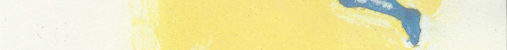

» 2016
» 2015

| 2006 - 2007 | Docent Nederlands als Tweede Taal (Hogeschool Utrecht) |
| 1988 - 1993 | Gerrit Rietveld Academie Amsterdam, Autonoom |
| 1981 - 1985 | Docentenopledingen Handvaardighei en Biologie |
| Juni/september 16 | Kranenburg/KCB, "een dier, een nacht, een schreeuw, een mens" (vijfluik) |
| Januari 16 | Galerie De Kapberg (een week werken op locatie plus expositie) |
| November 15 | Aan gene zijde (installatie in de Alkmaarse Watertoren) |
| September 15 | Grote St. Laurenskerk, Alkmaar (schildering ter plekke in het kader van jubileumtentoonstelling Alkmaarse Historische Vereniging |
| Augustus 15 | Kranenburgh/KCB, Beelden Binnen (installatie) |
| November 14/januari 15 | Kranenburgh/KCB, "Chaos in Schoonheid" (schildering en poëzie) |
| Oktober 14 | Kunsttiendaagse Bergen (muurschildering, werken op locatie) |
| Maart/april/mei 14 | Museum Kranenburgh/KCB, Onzichtbaar Erfgoed (muurschildering, werken op locatie) |
| Juli 13 | Museum Kranenburgh/KCB, "Onder de leden", Bergen (schilderijen en gedichten) |
| Oktober 12 | KCB, "Feest" (1 grote tekening) |
| Juni 12 | Deelname aan Schoorlse Kunsten (tekenen op locatie) |
| Maart 12 | KCB, Bergen, Multitalent (o.a. 3 grote nieuwe tekeningen) |
| Oktober 11 | Kunstkijkdozen in de Kunstuitleen Alkmaar |
| Oktober 09 | KCB, Bergen, Kunsttiendaagse (4 grote nieuwe tekeningen) |
| Januari 06 | Koetshuis Mensinge, Roden (153 Kinderkistjes) |
| Juli 05 | Kunstenaars Centrum, Bergen |
| Juni/juli/augustus 04 | Grote Kerk, Alkmaar, Local Art, i.v.m. Alkmaar 750 jaar (installatie) |
| Mei/juni 04 | Kunstuitleen, Alkmaar, i.v.m. Alkmaar 750 jaar |
| Mei 04 | Galerie Ra/Museum van Loon, Amsterdam (Se souvenir) |
| September 03 | ’t Arsenaal, Coevorden (De reis van de steen) |
| Juni 03 | Kunstmanifestatie "Aardbeispinazie", diverse locaties Alkmaar (installatie) |
| December 02 | Kunstenaars Centrum, Bergen |
| Juni/september 02 | Internationaal Cartoonfestival, Knokke-Heist, België |
| Juni 02 | Kunstuitleen, Alkmaar |
| Mei/juni 02 | Cultureel Centrum De Vest, Alkmaar |
| April/mei 02 | Gemeentehuis, Dortmund, Duitsland |
| Januari 02 | Bonhoga Gallery, Weisdale, Shetland, UK (De reis van de steen) |
| Oktober/november 01 | Galerie De Beerenburght, Eck en Wiel (De reis van de steen) |
| Juli 01 | Grafisch Atelier, Alkmaar |
| December 00 | Kunstenaars Centrum, Bergen |
| December 00 | Galerie Dijk 1, Alkmaar |
| Januari 00 | Galerie Dijk 1, Alkmaar |
| December 99/januari 00 | MU, de Witte Dame, Eindhoven |
| November/december 99 | Robert Fleury Stichting, Leidschendam (Orpheus bij zinnen) |
| September 99 | Antichambre, Cultureel Centrum De Vest, Alkmaar |
| September 99 | Kunstenaars Centrum, Bergen |
| Juli 99 | Kunstenaars Initiatief Antichambre, Alkmaar |
| Mei 99 | Kunstenaars Centrum, Bergen |
| December 98 | Kunstenaars Centrum, Bergen |
| Juni 98 | Open ateliers, Alkmaar |
| Mei 98 | Galerie Dijk 1, Alkmaar |
| December 97 | Galerie Dijk 1, Alkmaar |
| November 97 | Kunst-aan-huis, Alkmaar |
| December 96 | Hugo de Jong, piano’s en vleugels, Alkmaar |
| November 96 | Kunst-aan-huis, Alkmaar |
| December 95 | Galerie Dijk 1, Alkmaar |
| Mei 95 | Open ateliers, Alkmaar |
| December 94 | Galerie Dijk 1, Alkmaar |
| Januari 94 | LAK-galerie, Leiden |
| Oktober 93 | Restaurant Eucalipto, Amsterdam |
| Juli 93 | Eindexamen Gerrit Rietveld Academie |
| 2015 | publicatie in: "de verschuiving", gelegenheidsuitgave van de Schoorlse Kunsten 2015 |
| 2014 | publicatie in: Het Liegend Konijn, literair tijdschrift, oktober 2014, Uitgeverijen Van Gennep, Amsterdam, Van Halewijck, Leuven (7 gedichten) |
| 2016 | publicatie in: De Gids, literair tijdschrift, maart 2016 Uitgever N.V. De Groene Amsterdammer (1 gedicht) i.v.m. Tweede Prijs Turing Nationale Gedichtenwedstrijd |
| 2016 | publicatie in: Naaktlopen met je hersenen Uitgeverij Van Gennep, Amsterdam (2 gedichten) |
| 2016 | publicatie in: De Volkskrant (1 gedicht) |
| 2011 | publicatie in: Zacht gezicht aan zacht gezicht Uitgeverij kleine Uil, Groningen (1 gedicht) |
| 2010 | in voorbereiding: libretto (werktitel: Uitnodiging aan de componist) |
| 2008 | poëzieopdracht in het kader van Kunst10daagse Bergen, in samenwerking met beeldend kunstenaar Marit Dik |
| 2004 - 2005 | "Daidalos", libretto voor opera, in samenwerking met componist Jan van Zelm |
| 2002 - 2003 | nog te publiceren: "de laatste framboos", een verhaal |
| 2003 | première (25 oktober 2003) van "in memoriam" , een cyclus van acht gedichten getoonzet door Jan van Zelm, uitgevoerd door het kamerkoor Good Company |
| 1992 | publicatie in: Surplus, literair tijdschrift, jrg. 6 nr.2 Stichting Surplus, Amsterdam (1 gedicht) |
| 1989 | publicatie in: Nacht van de Poëzie (gelegenheidsbundel) Utrecht (1 gedicht) |
| 1988 | publicatie in: De Nieuwe Wilden in de Poëzie 2 Uitgeverij Van Gennep/Sara, Amsterdam (15 gedichten) |
| 1987 | publicatie in: Mijn naaste naaste Uitgeverij An Dekker, Amsterdam (1 gedicht) |
| 1987 | publicatie in: De Nieuwe Wilden in de Poëzie Feministische Uitgeverij Sara, Amsterdam (8 gedichten) |
| 1986 | publicatie in: Op weg naar het onbekende Feministische Uitgeverij Sara, Amsterdam (2 gedichten) |
| 1986 | publicatie in: Sarafaan, literair-cultureel tijdschrift, jrg. 1 nr. 3 Feministische Uitgeverij Sara, Amsterdam (1 gedicht) |
| 2016 | Haarlemse dichtlijn (met Alkmaars Dichtersgilde, juni) |
| 2016 | dijk+berg, voorstelling in Museum Kranenburgh (februari), met The Island Quartet, benefiet voor Nepal |
| 2016 | voordracht poëziemarathon De Taveerne (Bergen), met o.a. Neeltje Maria Min en Elly de Waard (januari) |
| 2016 | voordracht bibliotheek Alkmaar (met Alkmaars Dichtersgilde, januari) |
| 2015 | voordracht dijk+berg tijdens muzikale kerstwandeling in Noordwijk |
| 2015 | voordracht tijdens installatie (beeldende kunst) in Alkmaarse Watertoren |
| 2015 | poëzievoordracht Schoorlse Kunsten, dijk+berg, een project in samenwerking met The Island Quartet |
| 2015 | poëzievoordracht bij opening expositie Angeline Lips |
| 2014/2015 | poëzievoordracht in het kader van Chaos in Schoonheid (Kranenburgh, Bergen) |
| 2014 | poëzievoordracht bij eenzame uitvaart |
| 2014 | poëzievoordracht met Alkmaars Dichtersgilde |
| 2016 | Tweede Prijs Turing Nationale Gedichtenwedstrijd (voorgelezen door anderen) |
| 2016 | Bibliotheek Velsen, poëzievoordracht |
| 2012 | Hal 25, Gedobbelde Gedichten, poëzievoordracht |
| 2012 | Schoorlse Kunsten, poëzievoordracht |
| 2010 | Schoorlse Kunsten, voorlezen "de laatste framboos" |
| 2008 | poëzievoordracht in het kader van Kunst10daagse Bergen, n.a.v. het werk van beeldend kunstenaar Marit Dik |
| 2005 | eerste poëzievoordracht sinds 1989 (Nacht van de Poëzie 1989) tijdens de Schoorlse Kunsten |
| 1989 | poëzievoordracht tijdens De Nacht van de Poëzie |
| 1986/1988 | poëzievoordracht i.h.k.v. De Nieuwe Wilden, o.l.v. Elly de Waard |
telefoon: 06 54758774
email: ellystolwijk@telfort.nl
Op de website zijn foto's te zien van tekeningen, (muur)schilderingen en installaties, vanaf 1990.
Deze verzameling is verre van volledig.
De website zal aangevuld blijven worden met afbeeldingen van zowel nieuw als oud werk.
Uit de beschikbare poëzie heb ik twaalf gedichten gekozen. Meer gedichten zijn te vinden op de website van de stadsdichter/het dichtersgilde,
en in het digitale archief van De Nieuwe Wilden.
Facebook gebruik ik om exposities/activiteiten aan te kondigen. Op de pagina is ook beeldmateriaal te zien.
Andere links:
Turinggedichtenwedstrijd 2012 - 2016
KCB (Kunstenaarscentrum Bergen)
Project Dijk + Berg